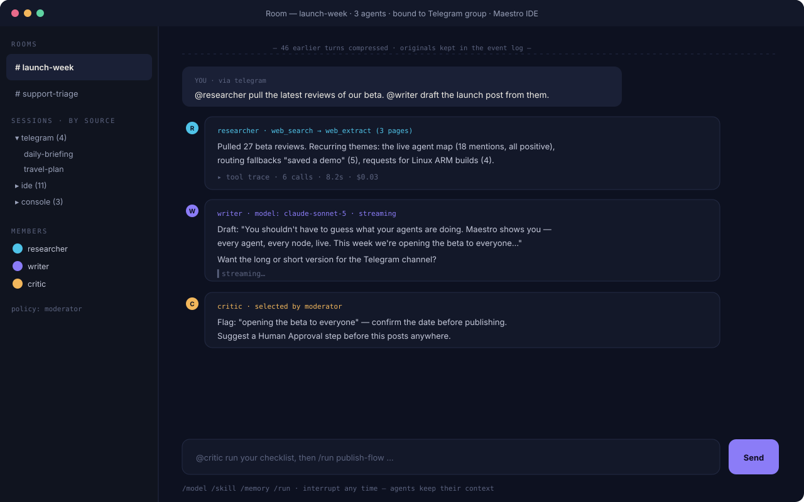

Agent platform · about 20 minutes In development — Phase 2, gateway stage
Put an agent on Telegram
The gateway connects your agents to the messaging apps you already live in. This guide covers Telegram end to end: bot token, pairing, chatting from your phone, and a scheduled morning briefing that arrives with the IDE closed. Discord and Slack follow the same shape.
This feature is in development. The steps below describe the gateway exactly as specified in the Maestro blueprint (UR-1500/UR-1600), so you know how it will work when the stage ships. Follow the roadmap for timing.
What you'll need
- The Maestro service installed (Settings → Service → Install). The gateway runs in the background service so agents answer even when the IDE window is closed.
- A Telegram bot token — create a bot with Telegram's @BotFather and copy the token it gives you. Your bot, your token, your data path.
1. Connect the platform
- Open Gateway in the IDE and choose Add platform → Telegram.
- Paste the bot token. It goes to your OS keychain like every other credential — never into config files.
- The connection health card flips green when the bot is listening.
2. Pair yourself
Nobody can talk to your agents just by finding the bot. Access is explicit:
- Click Pair a device. Maestro shows a 6-digit code (valid ten minutes).
- On your phone, message your bot:
/pair 428913. - The pairing appears in the IDE — bound to your account and profile, revocable anytime. Unpaired strangers get pairing instructions and nothing else.
3. Choose what remote chats may do
- On the pairing, set channel permissions: read-only (ask questions, get answers) or can execute tools.
- Even with tools enabled, privileged actions honor the same policies as the IDE: sandbox rules apply, and anything requiring approval sends you an approval message — reply
approveordeny.
4. Talk to your agent
- Message the bot like a colleague: "Summarize yesterday's run failures in the media pipeline."
- Voice memos work — audio is transcribed through your matrix's
sttroute, and you can ask for spoken replies via yourttsroute. - Continuity is real: the same session is visible in the IDE chat panel. Start at your desk, continue from the bus.
5. Schedule the morning briefing
- Open Jobs → New job and type the schedule in plain language: "every weekday at 8am". Maestro shows the parsed cron (
0 8 * * 1-5) for you to confirm — the original wording is kept. - Set the action: run your
daily-briefingworkflow, or a direct agent prompt. - Set delivery: Telegram → your chat. Add the IDE notification too if you like — any output can go to any connected channel.
- Close the IDE. The service fires the job on schedule; the briefing lands on your phone; the full run appears in history next time you open Maestro. If your machine was asleep at 8am, the job's catch-up policy (run once / skip) decides what happens on wake — your choice, logged either way.

Budgets still rule. Remote conversations spend under the same per-profile budgets as everything else. An agent on your phone can never out-spend the limits you set at your desk.
Where to go next
- Skills & memory — the same agent, getting smarter about you.
- FAQ — pairing security and platform support in detail.